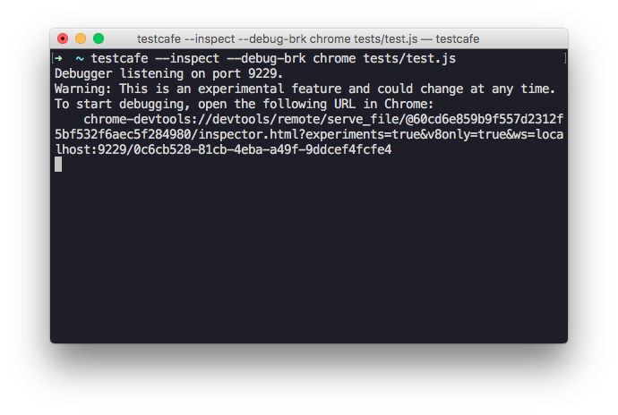
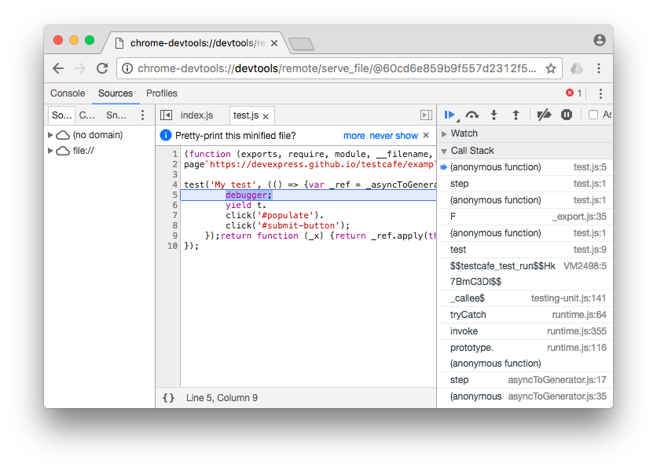

Debugging with Chrome Developer Tools
Starting with version 6.3.0, Node.js allows you to debug applications in Chrome Developer Tools.
If you have Chrome and an appropriate version of Node.js installed on your machine,
you can debug TestCafe test code.
To do this, add the --inspect and --debug-brk flags to the test run command.
testcafe --inspect --debug-brk chrome ./tests
Put the debugger keyword in test code where you want to stop.
fixture `My fixture`
.page `https://devexpress.github.io/testcafe/example`;
test('My test', async t => {
debugger;
await t
.click('#populate')
.click('#submit-button');
});
After the test run command is executed, a debugging URL will appear in the console.

Open this URL in a new Chrome instance. Chrome will invoke its Developer Tools and the debugger will stop test execution at the first line.
Click the 'Resume script execution' button or press F5 to continue. After that, text execution will pause at the debugger keyword allowing you to debug test code.
